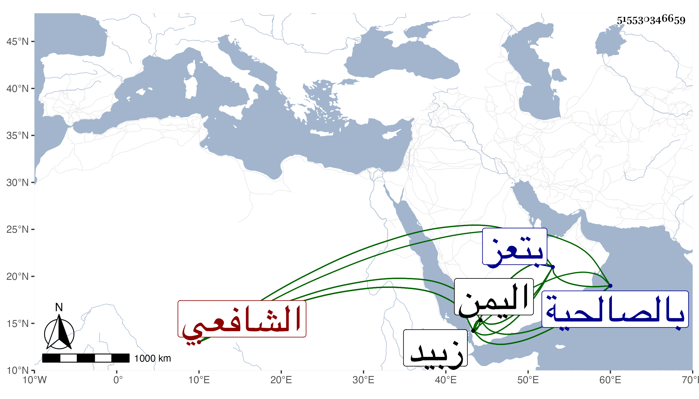

0902Sakhawi.DawLamic.ITO20230111-ara1.EIS1600.515530346659
Biography ID: 515530346659
993
محمد الجمال أبو عبد الله الشافعي أخو الذي قبله ووالد العفيف عبد الله الماضي ويعرف هذا بالطيب . ولد في ذي القعدة سنة اثنتين وثمانين وسبعمائة بزبيد ونشأ بها فتفقه بأبيه وأخذ عنه عدة علوم وسمع الحديث من عمه الموفق علي والمجد اللغوي والنفيس العلوي وغيرهم كالبدر الدماميني وابن الجزري حين قدومهما اليمن وأجاز له جماعة باستدعاء الجمال المراكشي وغيره كابنة ابن عبد الهادي والزين المراغي وكتب الكثير بخطه الغاية في الصحة والضبط بل ألف نكتا على الحاوي مفيدة سماها إيضاح الفتاوى في النكت المتعلقة بالحاوي في ثلاث مجلدات واختص بالظاهر يحيى بن إسماعيل صاحب اليمن وقلده أمر مدرسته التي أنشأها بتعز تدريسا ونظرا وحضه على وقف كتب فيها ففعل وأقر بها من نفائس الكتب ما يتعجب منه كثرة وحسنا وهي تقريبا نحو خمسمائة مجلدة ، وكذا استقر في تدريس الأشرفية إسماعيل بن العباس والفرحانية كلاهما بتعز وكذا كان له عند علي بن طاهر حرمة عظيمة بحيث عاده في مرضه ومعه القاضي الشمس يوسف ابن يونس الحبابي ، وكان فقيها محققا تصدى للإقراء والإفتاء بل أفتى وهو ابن عشرين سنة وانتفع به الناس وقال لي بعض فضلاء الحنفية ممن لقيه هناك إنه رأى له بعد الخمسين حلقة عظيمة وحافظة في الفقه قوية ، وولي قضاء الأقضية بزبيد بعد موت عمه المشار إليه في سنة أربع وأربعين فدام حتى مات بزبيد في شوال سنة أربع وسبعين على الأصح الذي كتبه ولده بخطه ، وهو ممن أجاز لصاحبنا ابن فهد ، وترجمه العفيف الثاشري فطول جدا وسرد من درس من طلبته جمعا قال : وهو أبرع من درس الحاوي وكان من يحضر عنده يشهد بأنه لا نظير له فيه بل استحضر مظان الروضة لخدمته لها أتم خدمة وله عليها حواش ، ودرس بعد موت أبيه بالصالحية والفرحانية كلاهما بزبيد وفي حياته باللطيفية بل ألزمه بالفتوى ولم يعذره في تركها حياء منه مع القيام بوظائف العبادات والمحاسن المتكاثرات وإليه انتهت رياسة الفتوى والأحكام وكثرت تلامذته وانتشرت فتاواه وهو وأبوه وجده وجد أبيه ووالده علماء وقل أن يتفق ذلك ، وامتدحه الأكابر وهو مع ما هو عليه من العلم والرياسة على قدم عظيم من التواضع وخفض الجناح والقرب وقضاء حوائج الناس ما أمكن وله نظم على طريقة الفقهاء فمنه مما كتب به لعمه الموفق علي بن أبي بكر :
| قلبي بكم أهل الغوير متيم | لا يشتهي طعم الطعام له فم |
| من يوم ما رحل الحداة بعيسكم | نحو العذيب حمامهم يترنم |
إلى أن قال :
| ولي اختصاص دون كل مجالس | وفوائد ليست لغيري منكم |
| تجري الدموع من المآقي عندما | والقلب ينكى والمنية تهجم |
